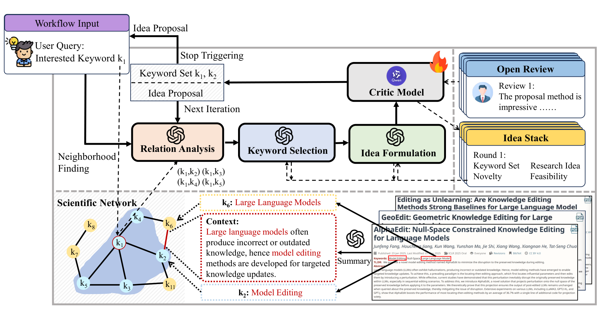
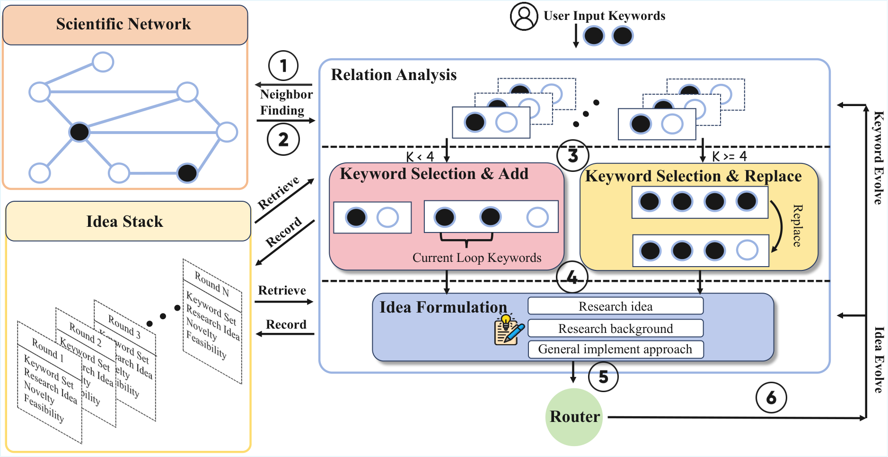
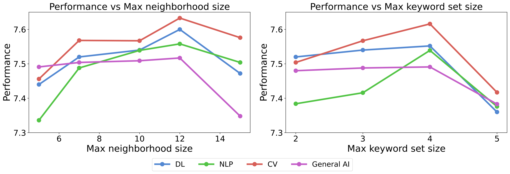
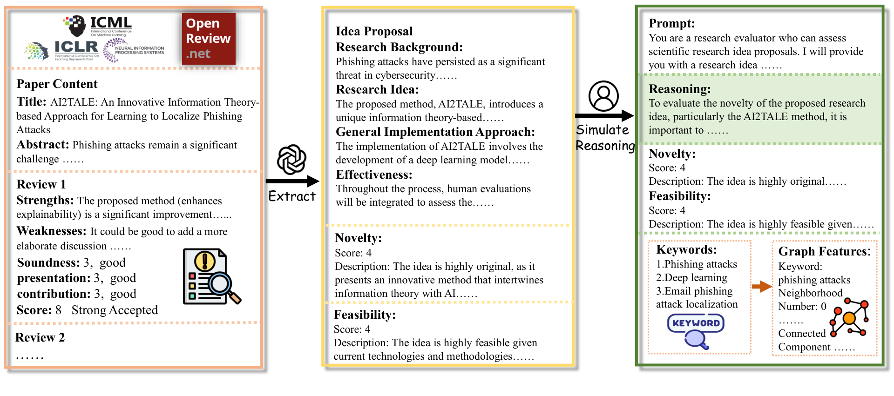
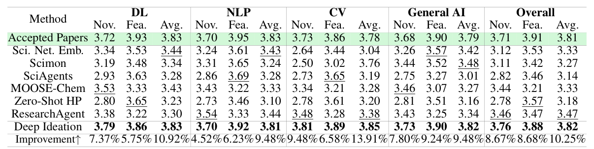
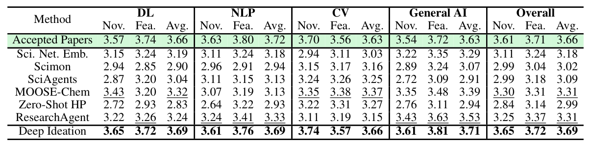
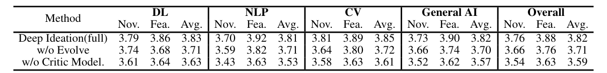
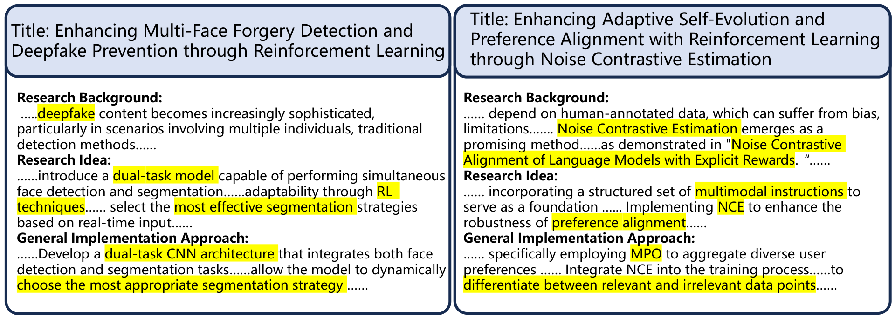

人类评估：细节几乎为零
附录 A.6 全部内容只有三句话：54 位研究者、按 novelty/feasibility 打分、对感兴趣的 proposal 写简评。没有：招募与遴选标准、专业背景、是否盲评、每人评多少条、评审者间一致性、显著性检验。正文引用的唯一定性证据是一条匿名好评。评审 gb37/hrL1 的质疑完全成立。
在 10.7 万篇顶会论文构建的「科学概念网络」上做图游走：explore–expand–evolve 迭代扩展关键词集 → 写成 idea proposal，由 LoRA 微调的 critic 打分驱动进化
这篇论文做了什么：把「文献组织」这件事做成一张关键词共现图——节点是 LLM 从 107,443 篇 AI 顶会论文抽取的关键词，边上挂着 LLM 写的「这两个词在这篇论文里如何被联系起来」的 2–4 句摘要。然后让 GPT-4o-mini 在图上逐步游走：每轮取邻居、选一个新词加入关键词集、把关键词集写成 idea proposal，由微调过的 Qwen3-8B critic 打 novelty/feasibility 分数决定继续扩展还是替换重写。声称 LLM-judge 均分超最佳基线 10.25%、达到顶会接收论文水平。
为什么值得精读：它是「概念网络组织文献」路线的一个失败样本——ICLR 2026 得分 2/6/2/2，作者未答辩直接撤稿。三个 2 分共同指向的问题（概念网络的机制价值未论证、critic 训练数据可疑、人类评估细节为零）正是这条路线的通病清单。
⚠ 可信度前提：代码未放出，本页无法做代码审计。官方仓库 kyZhao-1/Deep-Ideation 截至 2026-08-04 仅有一个 README 占位文件；论文承诺公开的 10 万篇概念网络数据集与 4278 条 review 训练数据也均未发布。评审 Dots 亦点名缺代码。因此本页所有涉及实现的判断只能标注 论文声称 或 合理推断，不存在「代码确认」档；结果数字全部无法独立复现。
论文的核心卖点是「不只共现，还有上下文关系」。拆开看，整个网络的构建只有三步，全部由 LLM prompt 完成，没有任何图学习或信息抽取模型。

g(·) 到底定义了没有？——核对结论：没有。评审 gb37 与 hrL1 都质疑聚合函数 g 未定义。逐字核对原文：§2.1 说 g 是 "a function that aggregates or processes these relationships"，§3.3.1 说 "g is a function that aggregate the relationship together"——两处都只是同义反复。附录 A.1.1 给出了 relation(v_i, v_j, p) 的实现（一个 prompt：给 LLM 两个关键词 + 单篇论文的 title/abstract/intro，让它用 2–4 句话解释这篇论文如何联系两词），但跨论文聚合的 g 连 prompt 都没给。合理推断 g 就是把多篇论文的摘要串接后再让 Relation Analysis Module 总结，但这只能算猜测。合理推断
剥掉叙事，这张图 = 关键词共现图 + 每条边挂一段 LLM 生成的 2–4 句自由文本。没有关系类型、没有方向、没有权重、没有实体消歧，也没有验证这段文本比「共现计数」多带了什么信息——评审 DTQ4（唯一给 6 分的人）索要的「复杂边特征 vs 简单边特征」对照实验，论文里不存在。核心卖点从头到尾没有被隔离验证。
三者都在回答同一个问题：给 LLM 喂什么结构的文献组织，才能生成有据可依的 idea。差异在组织单元、检索时机和反馈来源。
| 维度 | Chain-of-Ideas（引用链） | ResearchAgent（实体共现库） | Deep Ideation（概念网络） |
|---|---|---|---|
| 组织单元 | 沿引用关系串起的论文链，保留一条研究脉络的时间演化 | 核心论文的引用邻域 + 全库实体共现统计（entity linking 后计数） | 关键词共现图，边上挂 LLM 写的逐论文关系摘要 |
| 检索时机 | 一次性构链，之后在链上推演 | 一次性检索实体与相关论文，进入迭代评审 | 逐步图游走：每轮取邻居→选词→重写 idea（这是本文真正的差异点） |
| 「关系」的语义 | 引用 = 明确的学术承继关系 | 共现计数，无语义内容 | 共现 + 自由文本摘要；语义丰富但无类型、无验证 |
| 反馈信号 | 无内环反馈（生成后由人/LLM 评） | 多个 prompted 人格化 reviewer agent 互评 | LoRA 微调的 Qwen3-8B critic 打 novelty/feasibility 1–5 分 |
| 实质增量 | —— | 相对 ResearchAgent 的真增量只有两点：边上的 LLM 文本、以及把一次性检索改成图游走 + 图距离启发式。两点都没有对照实验支撑；「邻居关键词扩展」的思路 ResearchAgent / SciMON 已提出（评审 Dots 点名） | |
论文声称 图距离在系统里被显式当作 novelty/feasibility 的代理：Keyword Selection prompt（附录 A.1.2）明示「novelty 不足时可考虑最短路更长的候选词，feasibility 不足时偏好最短路更短的词」；critic 的输入也包含邻居数、连通性、最短路。这正是评审 gb37「把 novelty 和图距离混同」质疑的出处——它不是评审的过度解读，而是系统的设计本身。
除 critic 外全部由 GPT-4o-mini + prompt 完成（评审 Dots「纯 prompting」的判断成立）。每步的可复述版本如下。

对当前关键词集 Kt 中每个词，从概念网络取至多 m 个邻居（附录调参：m=12 最优）。对每对 (ki, kj)，Relation Analysis Module 用附录 A.1.1 的 prompt 逐篇生成 2–4 句关系解释。
Keyword Selection Module 读入完整 Idea Stack + 候选词（带关系摘要和到现有词集的最短路长度），按「分低补 novelty 选远词 / 补 feasibility 选近词」的启发式选恰好一个新词加入。Idea Formulation Module 把新词集写成 proposal（research background / research idea / general implementation approach 三段）。critic 打 novelty、feasibility 各 1–5 分并附描述，全部压入 Idea Stack。
当 |K| 达到 Lmax（调参：4 最优）时触发。Router prompt 根据当前分数判断问题出在哪：关键词质量不行 → Keyword_Replacement（从「flexible 子集」里换掉一个词，用户初始词不可动——这点仅见于 prompt，正文未提）；词集好但写得差 → Idea_Rewrite（重写 proposal）。
Fig. 1 里画了 "Stop Triggering"，§2.2 说迭代进行到「novelty/feasibility 达到满意水平或满足停止准则」，但满意阈值、最大轮数、由谁判停，全文（含附录）没有任何一处定义。评审 hrL1 直接问了这个问题，无 rebuttal。核对发现
Idea Stack 是唯一的记忆结构：一个按轮次追加的记录栈，每轮存（关键词集、proposal、novelty/feasibility 分数与描述、本轮加/换了哪个词及理由）。它整体注入后续每个 prompt，作用等价于一份结构化的对话历史——没有检索、没有压缩，也没有消融（评审 hrL1 指出只消融了 Evolve 和 Critic 两个组件）。

摘要说 critic "trained on real-world reviewer feedback"，贡献清单说 "review dataset derived from real-world reviewer feedback"。评审 gb37 指控：训练的其实是 LLM 生成的 paper–review 对。谁对？答案在 Fig. 3 和方法 §3.4 的措辞里。

裁定：gb37 的指控实质成立，且论文存在过度声称。真实评审只是数据流水线的上游条件输入；critic 实际学习的监督信号——数值分数、评价描述、推理链——全部是 LLM 生成/转换的文本。"trained on real-world reviewer feedback"（摘要、结论各出现一次）相对 §3.4 的自述是拔高了的说法；"derived from" 勉强站得住，但整个从评审到标签的转换质量没有任何人工校验或一致性报告。配合「critic 消融只带来 0.23 分（约 6%）提升、且仅由 LLM judge 衡量」，这个组件的证据链条相当薄弱。
评估设置：生成 idea 由 5 个 LLM judge（GPT-4o、Gemini-2.5-Flash、Grok-3、DeepSeek-V3.1、Qwen3-235B）按自造的 novelty/feasibility 1–5 rubric 打分取平均；另有 54 位研究者做人类评估。每种方法评了多少条 idea、初始关键词怎么选，全文没有说（评审 Dots 问「评估数据集是什么」，无解）。

数字审计：Table 1 至少有三处内部矛盾（本页独立重算，非评审发现）。核对发现


附录 A.6 全部内容只有三句话：54 位研究者、按 novelty/feasibility 打分、对感兴趣的 proposal 写简评。没有：招募与遴选标准、专业背景、是否盲评、每人评多少条、评审者间一致性、显著性检验。正文引用的唯一定性证据是一条匿名好评。评审 gb37/hrL1 的质疑完全成立。
系统内环用 LLM critic 按同一套 novelty/feasibility rubric 优化，外环再用 5 个 LLM 按几乎相同的 rubric 评分——生成过程实质是在对着评估指标直接优化，基线则没有这层内环。judge 间一致性未报告（hrL1 问了）；污染问题（生成的 idea 是否只是 judge/生成器训练截止后见过论文的换皮）也无任何日期分析（gb37、hrL1 都问了）。
「超过顶会接收论文」这个 headline 怎么读：Accepted Papers 基线是把真实论文的 title/abstract/intro 让 LLM 重新组织成 proposal 格式再评分。人类评估里系统生成的 idea（3.69）也高于真论文（3.66）——更合理的解释不是系统超越了人类科研，而是这套 rubric + proposal 格式偏好为其量身生成的文本；真论文经二次转写反而失分。
四份评审（gb37: 2 / DTQ4: 6 / Dots: 2 / hrL1: 2），作者未做任何 rebuttal，2025-11-27 撤稿。下表把主要质疑逐条与 tex 源码核对后裁定。
| 评审质疑 | 论文原文核对 | 裁定 |
|---|---|---|
| gb37：critic 训练的是 LLM 生成的 paper–review 对，不是真实人类评审 | §3.4 自述训练数据是 "simulated reasoning"；Fig. 3 显示数值标签由 GPT 从论文+评审中 "Extract"，映射规则未说明。真实评审仅为上游输入（详见本页 ④） | 实质成立，且摘要 "trained on real-world reviewer feedback" 构成过度声称 |
| gb37 / hrL1：聚合函数 g(·) 未定义；Fij 如何从多篇论文计算不明 | §2.1 与 §3.3.1 两处都只说 g "aggregates the relationships"；附录只有单篇论文的 relation 提取 prompt，无跨论文聚合的任何实现描述 | 成立。gb37 问 relation() 是 LLM 解析还是 embedding——这一小问附录可答（LLM 生成文本）；g 本身确实缺失 |
| gb37 / hrL1 / Dots：54 人人类评估细节严重缺失（盲法、招募、专业、一致性、显著性） | 附录 A.6 仅三句话，上述信息一项都没有；正文只引一条匿名好评 | 完全成立 |
| DTQ4：缺「复杂上下文边特征 vs 简单共现边」对照实验（核心卖点未验证） | 消融只有 w/o Evolve 和 w/o Critic（Table 3），概念网络与边文本从未被隔离验证 | 成立，是全文最致命的缺口：卖点没有证据 |
| gb37：novelty 可能与图距离混同 | Keyword Selection prompt 明写「长最短路→novelty、短最短路→feasibility」；critic 输入含最短路。混同是设计使然 | 成立（且比评审说的更严重：这是显式启发式，不是隐性偏差） |
| gb37 / hrL1：数据污染与时间线未分析（语料/评审数据/参照论文 vs LLM 训练截止日期） | 全文无任何 checkpoint 日期、语料截止时间或去重去污染措施 | 成立 |
| gb37：提升幅度可能在方差范围内；数据集统计未报告 | 无方差/显著性；且 Table 1 存在三处内部矛盾（本页 ⑤ 审计），摘要 10.67% vs 正文 10.25% 不一致。数据集有总量（107,443 篇、3–4 词/篇）但无节点/边数、领域分布、评估集规模 | 成立并加重（数字矛盾是评审没抓到的新证据）；统计缺失部分成立 |
| Dots：evolve 节写得混乱；停止准则、关键词何时删除不明 | Router 逻辑有 prompt 可查（还算清楚），但 "Stop Triggering" 的判停准则全文未定义；flexible 关键词子集只在 prompt 里出现、正文未提 | 大部分成立 |
| Dots：框架纯靠 prompting；邻居扩展思路 ResearchAgent/SciMON 已有 | 除 critic LoRA 外全部为 GPT-4o-mini + prompt；邻居检索确为已有思路（本页 ②） | 成立。「为什么不用科学 IE 系统抽关系」属于合理的路线偏好建议，不算硬伤 |
| gb37：基线不公平（MOOSE-Chem 是化学方法）；缺多智能体基线 | MOOSE-Chem 确为化学假设生成框架被移植到 AI 领域；但 SciMON/ResearchAgent/SciAgents 等主力基线对口 | 部分成立。缺基线的批评对一篇 2025 年的 ideation 论文属合理要求，但非致命 |
| hrL1：附录 A.1.3 与 A.1.7 两个 prompt 基本重复（编辑疏漏） | 核对属实：「keyword replacement」与「Keyword Replace」两节几乎逐句相同，仅一个占位符名不同（idea_stack vs status_bar） | 成立，反映定稿仓促 |
| Dots：缺 LLM 使用声明、缺代码、缺伦理声明 | arXiv 版附录已有 "The Use of Large Language Models" 一节（或为投稿版后补）；代码至今未放出，承诺公开的数据集也未发布 | LLM 声明存疑/或已修复；缺代码持续成立（截至 2026-08） |
| gb37：缺 Si et al. 2024 的 Effectiveness 评估维度 | rubric 只有 novelty/feasibility；但 Fig. 3 的训练数据抽取里其实含 Effectiveness 字段，模型却不评 | 成立，且暴露流水线内部不对齐 |
哪些质疑偏苛刻？整体看几乎没有。最接近「过苛」的是 Dots 要求改用科学 IE 系统和领域 LLM（属于另一条技术路线的偏好）和 gb37 的基线扩充清单（Many Heads、ResearchTown、IdeaSynth 等，合理但非一票否决项）。四份评审的事实性指控经核对无一被冤枉；唯一的 6 分（DTQ4）也在 weakness 里点中了同样的两个要害（边特征形式化、critic 泛化），只是给了更善意的分数。

Idea 层面（约三成责任）：「概念网络 + 图游走 + critic 反馈」不是坏方向，DTQ4 给 6 分正是认可这一点——上下文关系边比纯统计关联更有依据、Idea Stack 模拟人类迭代认知、微调 critic 优于裸 prompt 评审。但这个 idea 的增量空间本身就窄：邻居扩展（ResearchAgent/SciMON）、迭代评审（ResearchAgent/CycleResearcher）、知识图谱假设生成（SciAgents/MOOSE-Chem）都已存在，留给本文的只有「边上挂 LLM 文本」和「游走式检索」两个可辩护点。
执行层面（约七成责任）：恰恰是这两个可辩护点，论文都没有给出证据——g(·) 没定义、边文本 vs 共现计数没对照、概念网络没消融。再叠加 critic 训练数据的过度声称、人类评估三句话交差、主表数字自相矛盾、摘要与正文提升数字不一致、prompt 附录复制粘贴出错、承诺开放的代码与数据集全部没有兑现。这些不是「方向错了」的问题，而是验证纪律和写作纪律的全面缺失。作者面对四份评审零 rebuttal 直接撤稿，与其说是被冤枉，不如说是自知证据链撑不起声称。
这是概念网络路线的一个典型失败样本：把文献压成「关键词 + LLM 自由文本边」的图，检索层面确实比一次性 RAG 多了可游走的结构，但如果不能证明图结构本身（而非背后那个 LLM）贡献了 novelty/feasibility，它与「换皮 RAG」不可区分。与 CoI 的引用链（关系语义明确但只有单脉络）、ResearchAgent 的实体共现库（无语义但可验证）相比，本文选了语义最丰但最不可验证的表示——而验证恰恰是它没做的事。后续读同路线论文时，「边特征对照消融 + 判停准则 + judge 与内环 critic 是否同源」可以直接当三连筛查项。
来源与证据边界：本页方法拆解基于 arXiv:2511.02238 的 tex 源码（0Main + 1–6 章 + Appendix），评审内容基于本地 OpenReview 存档（ICLR 2026 #20167，存档日 2026-08-04），表格数字审计为本页独立重算。代码未放出，所有实现细节均为论文声称或推断，不存在代码确认档。